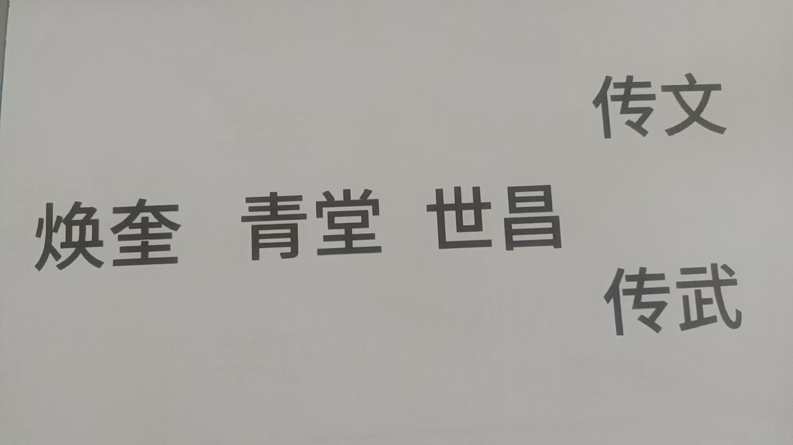

20260624有财自来，只管修福修福
符咒术法修炼修行
昨天要去账号，害得我等了一天
要不要我把账号发到群里，
有转账的直接转来
来者不拒
[呲牙][呲牙][呲牙][呲牙]
我说不再宣传招生实际上已经加了念力
不用劳作，有财自来
所以说，只管修福修福
有钱人[偷笑][偷笑][偷笑]
这就叫护法，养护师傅
这样我就可以全身心的修炼
解释说，酿酒师，要准备上市了，一旦上市，酿酒师身价就提升了
这非常合适我，
师出有名
喜欢喝酒，更喜欢做酒
再回家，我就把爷爷的爷爷酒坛子供起来
也了解到了，盘勾酒，只是老酒调新酒
加香精之类都是不合法的
所以可以放心的喝
刚才发过视频来，在一个山洞里，藏着上百吨酒
确实做的够大

族谱我也打印完了
刘焕奎就是我爷爷的爷爷
小时候，我自己住在家里一个小院里，那时候，我爹身上不舒服
我看到一个老人，白胡子二十厘米长，长的跟我父亲一样，进了院子，不见了，
过了一段时间，我父亲才走进来
我就问，长的那样的老人是谁
我爹就说是我爷爷的爷爷
八十多岁，走的时候我爹九岁
买下很多地
我爹身上不舒服，就找邻村大神到家里，把脉
大神说，家里老人回来了，给送了送，好了
跟我看到的一样
我七八岁的时候，获得超能力，就是走到我家祖坟那里
修了新路以后，祖坟在路边上
走到哪里，手上就有磁力感，并且很强
以后，功能越来越多
九岁开始，给人治病
门庭若市
名气很大了，才让科委师傅喊去
我做过一个梦，后人谁做酒卖酒，就把酒坛子传给他，供在门口
我五弟，那时候开了很多连锁店，卖景芝酒
但不是自己的店，也就没给他
我大哥在潍坊也开了三个店，
也就这机缘吧
虽然我不做酒，一大把证书，就认可我是做酒的了
装满酒，供起来
就放神坛一侧